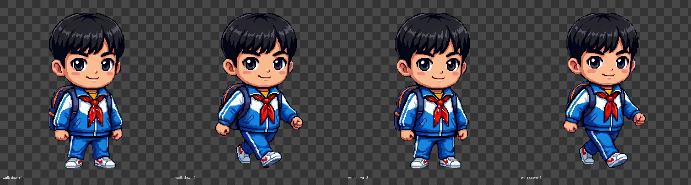
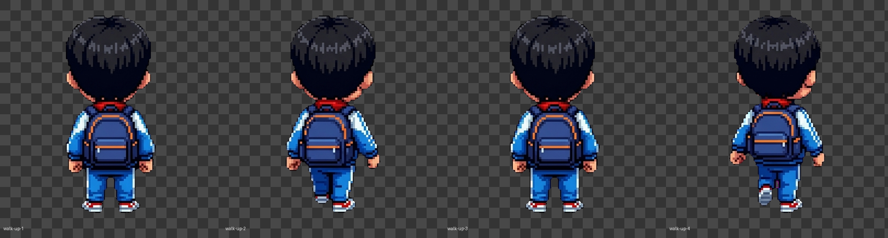
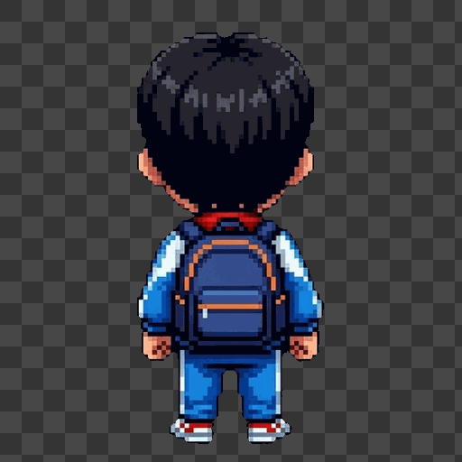
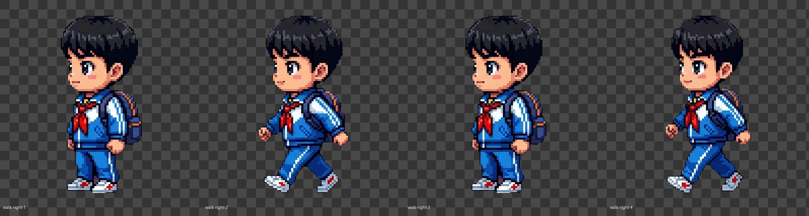
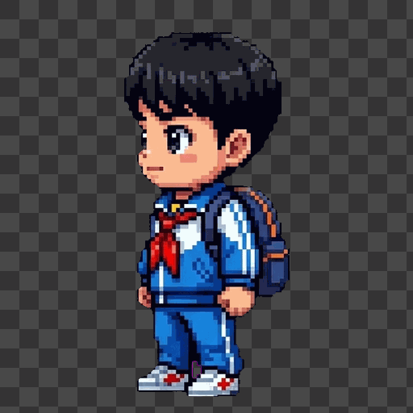
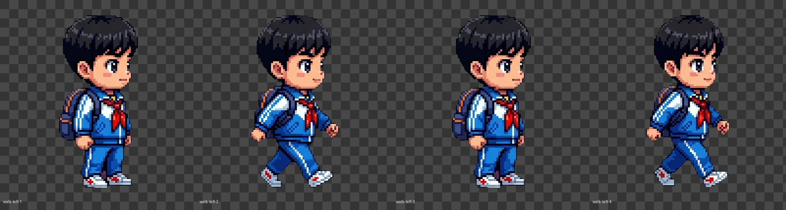
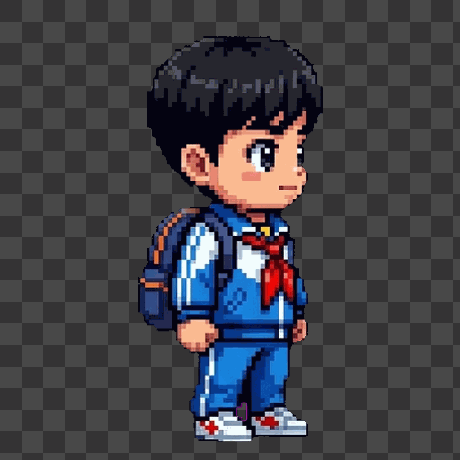

RPG Animation Skill Test - PASS
Output follows the rpg-asset-gen animation flow: single-frame candidates, mirrored side direction, anchor normalization, GIF/strip QA.
Report: qa/report.json
walk-down PASS

Structural QA: PASS. Human continuity review is still required.
walk-up PASS


Structural QA: PASS. Human continuity review is still required.
walk-right PASS


Structural QA: PASS. Human continuity review is still required.
walk-left PASS


Structural QA: PASS. Human continuity review is still required.